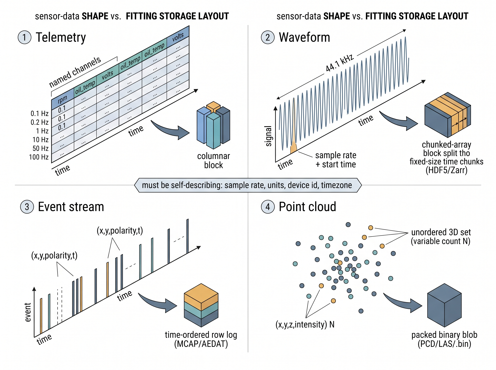

"They handed me a folder of float32 arrays with no sample rate, no units, and no timezone. I did not have a dataset. I had a rumor."
A Disillusioned AI Agent
Prerequisites
This section assumes basic Python and the ideas of sampling rate, timestamps, and clock synchronization introduced in Chapter 3. It leans lightly on the notions of quantization and dynamic range from Chapter 2. No storage-engine background is needed; the columnar and chunked-array ideas are built from scratch here, and the full toolchain (Parquet, HDF5, Zarr, MCAP) is catalogued in Appendix D. Everything you store here is what later sections in this chapter window, split, and normalize.
The Big Picture
Before you can model a sensor, you have to store what it produced without quietly destroying it. Sensor data is not one shape: a temperature log, a vibration waveform, a Controller Area Network (CAN) bus trace, and a lidar sweep have almost nothing structurally in common, and forcing all four into the same comma-separated values (CSV) file is how datasets die. This section names the four canonical shapes, matches each to the storage layout that fits its physics, and insists on one non-negotiable rule: a format must be self-describing. A file of numbers with no sample rate, units, device identity, or time base is not a compact dataset. It is a guess waiting to be misread.
Four shapes, not one
Pick the wrong shape and the damage is silent: a waveform forced into CSV bloats tenfold and a resampled event stream loses the very timing that was its signal, defects nobody catches until a model trained on the corrupted data misbehaves in the field. Almost every sensor stream you will meet falls into one of four structural families, distinguished by three questions: are the samples uniformly spaced in time, is the data dense or sparse, and does each record hold a fixed or variable number of values? Get the family right and the storage decision nearly makes itself.
Telemetry is low-rate, multivariate, timestamped scalars: engine revolutions per minute (RPM), battery voltage, Global Positioning System (GPS) latitude, cabin temperature. Each is a named channel sampled from a fraction of a hertz up to roughly a hundred. It is naturally a wide table, one row per timestamp, one column per channel. Waveforms are dense, uniformly sampled continuous signals: audio at 44.1 kHz, an electrocardiogram (ECG) trace at 500 Hz, a bearing accelerometer at 25.6 kHz. Here the sample rate is not data to store per row; it is a single number that, together with a start time, lets you reconstruct every timestamp implicitly. Event streams are asynchronous: things happen at irregular instants and you record a tuple when they do. A CAN message, a syslog line, a keystroke, or an event-camera pixel firing \((x, y, \text{polarity}, t)\) (polarity being whether that pixel just brightened or darkened) all share the trait that time between records is itself information. Point clouds are unordered sets. A single lidar sweep is a variable-size bag of points, each carrying \((x, y, z)\) plus intensity and often a per-point timestamp. The points have no meaningful row order, and every frame holds a different count.
Table 5.1.1 lays these four side by side. The reason this taxonomy matters is that each shape breaks a different default. Telemetry punishes row-major storage when you only need two of two hundred channels. Waveforms punish any format that stores a timestamp per sample. Event streams punish fixed-rate assumptions. Point clouds punish anything that expects a rectangular array. Choosing the layout is choosing which of these mistakes you refuse to make. In short: the shape of a sensor stream, not your convenience, dictates the format that keeps its physics alive. Figure 5.1.1 illustrates the four canonical sensor-data shapes and their fitting storage layouts.

| Shape | Timing | Density | Record | Typical rate | Fitting layout |
|---|---|---|---|---|---|
| Telemetry | regular or irregular | sparse channels | fixed width | 0.1–100 Hz | columnar table (Parquet) |
| Waveform | uniform | dense | scalar per tick | 0.1–100 kHz | chunked array (HDF5, Zarr, WAV, EDF) |
| Event stream | asynchronous | sparse in time | fixed-width tuple | bursty | row log (Parquet, MCAP, AEDAT) |
| Point cloud | per-frame | sparse in space | variable count | 10–20 Hz frames | packed binary (PCD, LAS/LAZ, .bin) |
Key Insight
A storage format is not a neutral container; it is a claim about what your data is. Store a 25 kHz vibration waveform as a CSV with a timestamp column and you have inflated the file by roughly tenfold, thrown away the guarantee of uniform spacing, and invited floating-point timestamps that drift out of step with reality. Match the layout to the shape and the format enforces the physics for you. Mismatch them and every downstream tool inherits a lie about the signal.
Rows, columns, and chunks: why layout is destiny
The deepest split in sensor storage is row-major versus columnar. A row-major file (CSV, JavaScript Object Notation (JSON) lines, a naive database table) stores all fields of record 1, then all fields of record 2, and so on. A columnar file (Parquet, Arrow, ORC) stores all values of channel A contiguously, then all of channel B. Figure 5.1.1 draws the two layouts side by side and shows what happens when a query asks for a single channel. For telemetry the columnar layout is transformative for three concrete reasons. First, selective reads: an analyst who wants only rpm and oil_temp from a two-hundred-channel truck log reads two columns off disk and skips the rest, instead of parsing every byte of every row (the right half of Figure 5.1.1). Second, compression: values within one channel are similar (temperature changes slowly), so a column of them compresses far better than interleaved heterogeneous rows; run-length and dictionary encoding (schemes that replace long runs of a repeated value, and repeated values themselves, with short codes) routinely shrink telemetry by five to twenty times. Third, predicate pushdown: column statistics stored per block let a reader skip entire chunks whose value range cannot match a filter, so "give me the rows where RPM exceeded 6000" touches only the blocks that could contain them.
Parquet, named repeatedly above, is the concrete workhorse worth pinning down: it is an open columnar file format that stores each channel as its own compressed, statistics-tagged block inside a single self-contained file. It matters because it delivers all three columnar wins (selective reads, per-column compression, predicate pushdown) with no custom code, which is why it has become the default container for tabular telemetry. Mechanically, it partitions the table into "row groups" and, inside each, writes every column contiguously with a dictionary and min/max statistics, so a reader can seek straight to the exact columns and blocks a query needs. Reach for Parquet on wide, sparse, mixed-type streams like telemetry and event logs; prefer a chunked-array format such as HDF5 or Zarr when the data is instead a single dense uniform waveform.
Common Misconception
The misconception is "moving from CSV to Parquet is just a compression trick that makes files smaller." Smaller files are the least of it: the layout change also decides which queries are cheap (columnar makes two-of-two-hundred-channel reads nearly free) and whether the signal's physics survives, since a well-chosen format carries units, sample rate, and provenance that a bare CSV silently discards.
Waveforms want a different discipline. A dense uniform signal carries no per-sample metadata worth storing, so the right structure is a chunked array: one contiguous block of a single dtype (data type, for example 32-bit float or 16-bit integer, describing how each sample's bytes are interpreted), split into fixed-size chunks along the time axis, with sample rate, units, dtype, start time, and device identity held once as attributes. HDF5 and Zarr do exactly this; WAV and the biosignal EDF (European Data Format) container do a domain-specific version. Chunking makes a multi-hour recording streamable: you read the ten-second window you need without materializing the whole file, the access pattern Section 5.2 builds windows on. The governing rule is that timestamps for a uniform signal are computed, never stored: sample \(n\) sits at \(t_0 + n/f_s\), so a stored timestamp column wastes space and lets rounding error desynchronize the axis. Getting \(t_0\) and \(f_s\) right ties back to the synchronization discipline of Chapter 3.
Mental Model
Think of a sheet of music. The composer does not write a wall-clock time next to every note; that would be enormous and would drift the instant one note were mistimed. Instead the tempo (say 120 beats per minute) is marked once at the top, and each note's position in the bar tells you exactly when it sounds. A uniform waveform stores time the same way: the sample rate \(f_s\) is the tempo written once, the start time \(t_0\) is the downbeat, and sample \(n\) plays at \(t_0 + n/f_s\). Storing a timestamp per sample is like scribbling a clock reading beside every note: bulky, and the moment one reading is rounded the whole piece falls out of step.
Step-Through: reconstructing a time axis instead of storing it
Trace the "compute, never store" rule on a tiny uniform waveform. Take a sample rate \(f_s = 4\) Hz, a start epoch \(t_0 = 1000.0\) s (an epoch being a count of seconds from a fixed reference instant), and just five samples with values \([0.7, -0.2, 0.9, 0.1, -0.5]\). A naive row-major file stores ten numbers: a timestamp and a value on every row. Watch the timestamp column get manufactured from two numbers instead.
- Sample \(n=0\): \(t = 1000.0 + 0/4 = 1000.00\) s, value 0.7
- Sample \(n=1\): \(t = 1000.0 + 1/4 = 1000.25\) s, value -0.2
- Sample \(n=2\): \(t = 1000.0 + 2/4 = 1000.50\) s, value 0.9
- Sample \(n=3\): \(t = 1000.0 + 3/4 = 1000.75\) s, value 0.1
- Sample \(n=4\): \(t = 1000.0 + 4/4 = 1001.00\) s, value -0.5
The self-describing version stores five values plus two metadata numbers (\(f_s\) and \(t_0\)), seven numbers rather than ten, and the ratio only improves with length: at one million samples it is 1,000,002 numbers versus 2,000,000, a clean halving. More important than the size, the reconstructed axis is exact: because each timestamp is derived from the same two constants, no sample can silently round out of step with its neighbours, which is exactly the drift a stored floating-point timestamp column invites.
In Practice: a wind-turbine fleet drowning in CSV
An industrial monitoring team streamed vibration and supervisory control and data acquisition (SCADA) telemetry from three hundred wind turbines into hourly CSV files, one folder per turbine. Each accelerometer channel ran at 25.6 kHz, so a single ten-minute record was over fifteen million rows, and every row redundantly carried a text timestamp. Storage ballooned past a petabyte and a simple query, "pull the gearbox axial channel for turbine 44 last Tuesday," took twenty minutes because the reader parsed every column of every row. Re-engineering split the two shapes apart: high-rate vibration went into chunked HDF5 with sample_rate_hz, units, and turbine_id as dataset attributes, while the slow SCADA telemetry (power, wind speed, nacelle temperature) went into daily Parquet partitioned by turbine. The same query dropped to under two seconds and on-disk size fell by roughly eight times, purely from matching layout to shape. Not one bit of physics changed; the description of the data did. This is the raw material Chapter 36 later turns into remaining-useful-life models.
Event streams and point clouds: the irregular families
Telemetry and waveforms both eventually submit to a grid, whether a column table or an implied uniform time axis; the remaining two families never do. Event streams and point clouds resist the tidy rectangle, and pretending otherwise is where naive pipelines quietly corrupt data. An event stream carries its meaning in the gaps: a burst of CAN messages during hard braking and silence during cruise are both signal. Store events as a row log where the timestamp is a first-class column, never resample them onto a fixed grid at ingestion time (that decision belongs downstream and destroys information if baked in), and keep them monotonically ordered by time. Robotics leans on MCAP and the older rosbag containers precisely because they log heterogeneous, asynchronous messages with per-message timestamps and typed schemas; neuromorphic vision uses AEDAT and EVT to pack millions of \((x, y, p, t)\) tuples per second, the format that Chapter 46 builds event-camera perception on. A columnar log such as Parquet also serves general event data well, since the timestamp and payload columns compress and filter efficiently.
Checkpoint
So far: telemetry and waveforms fit a grid, but event streams do not. Store events as a time-ordered row log where the timestamp is a first-class column, never resample them onto a fixed grid at ingestion, and let a container like MCAP or a columnar log carry the per-message timestamps and schemas.
If an event stream scatters its records along time, a point cloud scatters them across space, and it defeats the rectangle for reasons of its own. A point cloud is a set, and sets have two properties that break array-shaped storage: variable cardinality (each sweep has a different point count) and permutation invariance (no canonical order). You cannot stack frames into one rectangular tensor without padding, and you must never let a tool assume row order carries meaning. Automotive lidar pipelines commonly store each frame as a packed little-endian binary blob of \(N \times 4\) float32 values \((x, y, z, \text{intensity})\) with \(N\) recorded in a sidecar index; geospatial workflows use LAS and its compressed cousin LAZ; general 3D tooling uses PCD and PLY. Whatever the container, the metadata that must ride along is the sensor pose, the coordinate frame, and the per-point time offset, because a sweep is not instantaneous and the vehicle moved while it scanned. The models that consume these sets, and the reason their architectures must be permutation-invariant, are the subject of Chapter 42.
Real-World Application: autonomous-driving perception (KITTI)
The KITTI benchmark, the dataset most self-driving perception research is measured against, stores every Velodyne lidar sweep as exactly the packed-binary layout described above: a headerless little-endian blob of \(N \times 4\) float32 values \((x, y, z, \text{reflectance})\), one .bin file per frame. Because the file carries no point count, loaders recover \(N\) by dividing the file size by sixteen bytes (four float32 values at four bytes each), and the sensor pose and calibration ride in separate sidecar files. This is the shape-matched storage that lets a point-cloud network read a variable-size, unordered set per frame without ever pretending it is a fixed rectangle.
The Camera Where Nothing Is Free and Silence Costs Zero
Every conventional video format pays the same bill each frame whether the scene is a fireworks finale or a blank wall: the sensor reports a full grid of pixels on a fixed clock. Event cameras invert this. Each pixel fires an \((x, y, \text{polarity}, t)\) tuple only when its brightness changes, so a perfectly static scene generates almost no data at all, while the data rate soars precisely where the action is. The counterintuitive consequence is that these sensors cannot be stored as frames at any fixed rate without either fabricating information during stillness or dropping it during motion. The event stream is the native format, which is why AEDAT and EVT store raw asynchronous tuples rather than images, and why the temporal gaps that other formats discard are here the main signal.
Self-describing or worthless
Across all four shapes, one property separates a dataset from a rumor: the file must carry enough metadata to reconstruct physical meaning without external knowledge. The minimum viable descriptor is the tuple in the code below, and its absence is the single most common way sensor data arrives broken. You cannot interpret a bare float32 array without its dtype and endianness (is that little-endian float or big-endian int?), its sample rate and start time (or the time axis is unknowable), its units and scale (millivolts or volts, raw analog-to-digital converter (ADC) counts or calibrated), its device and session identity (or you cannot later build the device-disjoint splits that Section 5.4 requires), and its timezone or an unambiguous epoch (or midnight is a coin flip). Listing 5.1.1 writes a waveform to Parquet with exactly this descriptor attached as schema metadata, then reads it back and reconstructs the time axis from \(f_s\) and \(t_0\) alone.
import numpy as np, pyarrow as pa, pyarrow.parquet as pq
fs, t0 = 25600.0, 1_726_000_000.0 # Hz, and a UTC epoch second
sig = np.random.randn(256_000).astype(np.float32) # ~10 s of vibration
# Attach the self-describing descriptor as column-schema metadata.
table = pa.table({"accel_axial": sig})
table = table.replace_schema_metadata({
b"sample_rate_hz": b"25600.0",
b"start_epoch_utc": b"1726000000.0",
b"units": b"m/s^2",
b"device_id": b"turbine-044-gearbox",
b"session_id": b"2026-07-14T09:00Z",
})
pq.write_table(table, "vib.parquet", compression="zstd")
# A reader anywhere reconstructs the time axis with no side channel.
back = pq.read_table("vib.parquet")
meta = back.schema.metadata
fs_r = float(meta[b"sample_rate_hz"])
n = back.num_rows
t = float(meta[b"start_epoch_utc"]) + np.arange(n) / fs_r # implicit, exactnp.arange(n) / fs_r, never stored per sample, which keeps the file small and the axis exact.As Listing 5.1.1 shows, carrying device_id and session_id is not bookkeeping pedantry. Those fields are the hooks that make leakage-safe splitting possible at all; drop them at ingestion and no downstream care can recover a device-disjoint test set, which is why Section 5.3 treats missing provenance as a first-class dataset defect.
The Right Tool
Rolling your own self-describing binary format (a header struct, a magic number, an offset index, per-column compression, endianness handling, and a reader that streams chunks) is a few hundred lines and a rich source of subtle bugs at the block boundaries. A mature columnar library collapses the whole thing to a single call:
import pandas as pd
df.to_parquet("telemetry.parquet", compression="zstd") # schema, stats,
# chunking, all handled
cols = pd.read_parquet("telemetry.parquet", columns=["rpm", "oil_temp"])df.to_parquet writes the whole self-describing container and pd.read_parquet(..., columns=[...]) pulls back just rpm and oil_temp. The one columns= argument is the selective read; per-column compression, block statistics, and predicate pushdown come for free.Listing 5.1.2 replaces roughly 300 lines of format engineering with 2, and hands you column statistics and predicate pushdown for free. What the library will not do is decide which shape your data is or what metadata it deserves; that judgment stays yours.
Exercise
Take a dataset you have on hand (or download one accelerometer human activity recognition (HAR) recording). Classify each of its streams into one of the four shapes in Table 5.1.1, and for each, write down the storage layout it deserves and the minimum self-describing descriptor it needs. Then find one stream that is currently stored in a mismatched format (a waveform in CSV, or telemetry in row-major JSON) and estimate the size reduction from re-encoding it correctly. Keep the descriptors; you will attach them to windows in the next section.
Self-Check
1. Why is storing a per-sample timestamp column for a uniformly sampled waveform both wasteful and dangerous?
2. Give two concrete reasons columnar storage beats row-major storage for wide, multi-channel telemetry.
3. A point cloud and a telemetry table are both "sensor data." Name the two structural properties of a point cloud that forbid storing it as a fixed-width rectangular table.
Research Frontier
Parquet was designed for analytics scans, not for the shuffled, random-access reads a training loop makes when it pulls scattered windows from a huge sensor corpus. Two 2023-plus formats target exactly that gap. Lance (the storage layer behind LanceDB, 2023) is a columnar format built for fast random row access, zero-copy versioning, and vector search, reporting order-of-magnitude faster point lookups than Parquet on ML workloads. Vortex (Spiral, 2024) pushes further with a cascade of lightweight, decode-in-place compression codecs and reports both smaller files and faster random access than Parquet. Watching these mature is worthwhile because leakage-safe training over sensor windows is dominated by random reads, which is the one access pattern the classic columnar format handles worst.
Try It: round-trip a waveform three ways
Measure for yourself how layout, not physics, drives file size and query speed, using only NumPy, pandas, and pyarrow on a laptop.
- Synthesize ten seconds of vibration:
fs = 25_600,sig = np.random.randn(fs * 10).astype(np.float32), and build a matching Coordinated Universal Time (UTC) time axist = t0 + np.arange(sig.size) / fs. - Write it three ways: (a) a CSV with two columns
time,accel; (b) a Parquet table of the same two columns; (c) a Parquet table of only theaccelcolumn withsample_rate_hzandstart_epoch_utcattached viareplace_schema_metadata(as in Listing 5.1.1). - Record the on-disk size of each file with
os.path.getsizeand print the ratios; the timestamp-free metadata version should be the smallest by a wide margin. - Time reading back just the signal from each:
pd.read_csvversuspq.read_table(..., columns=["accel"]), usingtime.perf_counter. - From version (c), reconstruct the time axis from the two metadata numbers alone and assert it matches your original
tto floating-point tolerance, confirming you lost nothing by never storing timestamps.
Lab: chunk size versus windowed-read latency on a real ECG
Goal: feel how the chunked-array layout, and specifically the chunk size you pick, controls how fast you can pull a short window out of a long waveform, so that the abstract "chunking makes recordings streamable" claim becomes a measured curve.
Tools: Python with wfdb (to fetch one PhysioNet record), h5py (chunked HDF5), numpy, and time.perf_counter. Install with pip install wfdb h5py numpy.
Steps. (1) Download a single half-hour ECG record with wfdb.rdrecord (the MIT-BIH Arrhythmia Database, record 100, is a good small start and runs about 30 minutes) and pull one channel into a float32 array; note its sample rate from the record header. (2) Write that array to several HDF5 files, each with a different chunks= value along the time axis: try 256, 4096, 65536, and one unchunked contiguous dataset. Store sample_rate_hz and start_epoch_utc as dataset attributes so the file stays self-describing. (3) For each file, time reading back one thousand random ten-second windows, converting each window's start time to a sample index with \(n = \lfloor (t - t_0) f_s \rfloor\) and slicing dset[n:n+w].
What to vary: the chunk size, and separately the window length (one second versus ten versus sixty). What to observe: plot median window-read latency against chunk size. You should see a U-shape: tiny chunks add per-chunk bookkeeping overhead, while huge or contiguous chunks force the reader to touch far more bytes than the window needs. The fastest chunk size sits near your typical window length, which is the concrete reason downstream windowing (Section 5.2) and storage layout must be chosen together, not in isolation.
What's Next
Section 5.2 takes these correctly-stored streams and carves them into the windows a model actually trains on: how long a window should be, how much they overlap, and how a label gets attached to a slice of time without smearing across boundaries. The self-describing descriptors you built here are exactly what make that windowing reproducible instead of a pile of magic numbers.